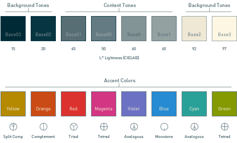
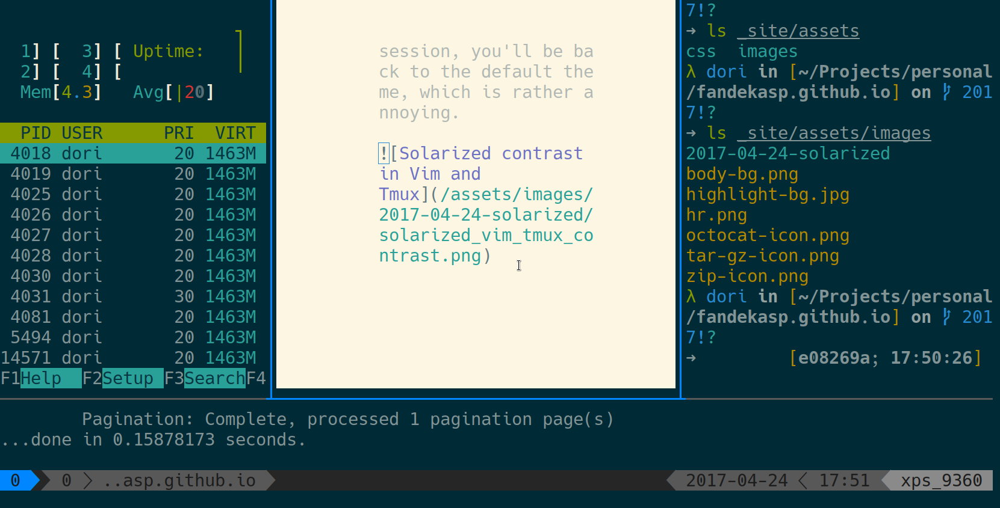
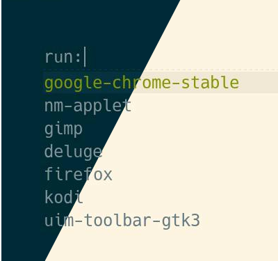
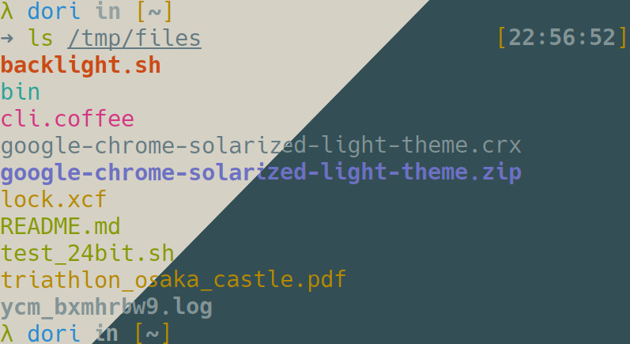
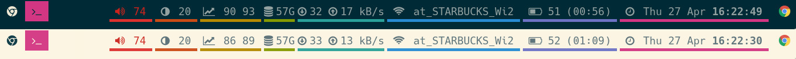

In this post, I will go over my configuration to set the Solarized light/dark themes in linux. In addition, I'll share my tricks to easily toggle between these 2 themes across all applications.
Table of contents:
Below are the applications I will refer to:
- Arch Linux: Lightweight rolling-release Linux distribution.
- I3: Tiling window manager.
- Termite: Keyboard-centric VTE-based terminal.
- Tmux: Terminal multiplexer to easily switch between programs in a single terminal.
- NeoVim: Vim fork, text editor.
What is Solarized?
Solarized is a color palette designed to be very readable in both light and dark modes, using only 16 colors. The colors were chosen from the CIELAB color space, which smartly arranges colors visible to the human eye.

There are many other interesting color schemes out there, like gruvbox, but I won't discuss the differences between each palette in this article.
I have been using Solarized for several years now. A recurrent issue when setting up my system is to homogeneize colors across applications).
While it would be nice to see applications reuse default colors, they unfortunately define their own set of colors, and we therefore need to copy the solarized color palette in each of these configuration files.
Imagine you are running Vim within Tmux, both setup with solarized dark colors, and want to switch to the light theme because you're working outside or near a window around noon. You might already have a vim binding allowing you to toggle the colorscheme mode within your current session, but then you'll be struck by the high contrast between the tmux dark colors shown in other panes and the vim light colors in your current pane. Moreover, if you'd like to reopen a new vim session, you'll be back to the default theme, which is rather annoying.

Here's how I smoothly transition between light and dark mode for all applications using a shortcut.
Configure Solarized with ...
Xresources
Xresources is a user-level configuration dotfile, used to set X resources used by X client applications.
I truly wish applications would comply entirely to the colors specified in the Xresources so that we wouldn't need to configure our palette in so many different places.
Therefore, I went and created 2 files, called ~/.Xresources-light
and ~/.Xresources-dark files, then symlinked the current theme to
~/.Xresources.
Example for ~/.Xresources-dark:
! Solarized theme ! Common #define S_yellow #b58900 #define S_orange #cb4b16 #define S_red #dc322f #define S_magenta #d33682 #define S_violet #6c71c4 #define S_blue #268bd2 #define S_cyan #2aa198 #define S_green #859900 ! Dark #define S_base03 #002b36 #define S_base02 #073642 #define S_base01 #586e75 #define S_base00 #657b83 #define S_base0 #839496 #define S_base1 #93a1a1 #define S_base2 #eee8d5 #define S_base3 #fdf6e3
Then I updated the X11 configuration with xrdb.
$ xrdb -load ${HOME}/.Xresources
Rofi
Rofi, a replacement to dmenu to easily find a new program to launch.
Rofi's configuration also goes in the Xresources files.
Example for ~/.Xresources-dark:
! bg border separator rofi.color-window: #dd002b36, #002b36, #dd073642 ! bg fg altbg hlbg hlfg rofi.color-normal: #dd002b36, #839496, #00002b36, #dd073642, #859900 rofi.color-active: #dd002b36, #268bd2, #00002b36, #dd073642, #268bd2 rofi.color-urgent: #dd002b36, #d33682, #00002b36, #dd073642, #d33682
Here is how it looks for me:

Dircolors
dircolors is the color setup for the
lscommand.
To have ls colorize the directory/files in a solarized fashion, we need to specify the dircolors parameters. I went with the joel-porquet/zsh-dircolors-solarized plugin for zsh.
Using zgen to manage my zsh plugins, I
added the following line to my ~/.zshrc:
zgen load joel-porquet/zsh-dircolors-solarized
Here is an example of dircolors from Termite with 80% transparency:

i3
i3 is a tiling window manager, allowing one to always see all opened windows, without them stacking above each other. With plenty of keystrokes, it makes it possible to control every windows only using the keyboard, making the mouse pretty much useless.
My i3 stack consists of:
- i3-gaps-next, the development branch of a fork of i3wm offering more features, like gaps between windows instead of borders.
- i3blocks for the status line
- i3lock as screen locker.
In addition, for my solarized theme switcher, I used a fork of i3-style, where I defined my own transparent solarized themes, since I wasn't satisfied by the existing theme.
To execute the script, I added a new binding in i3's configuration file:
bindsym $mod+b exec --no-startup-id ${HOME}/scripts/toggle_solarized_theme.sh
My $mod button is set to Mod4, which is the Windows key in my XPS
- Hence, whenever I press Mod4-b, my applications will toggle between dark and light solarized modes. The b in the keystroke stands for "Background".
Finally, I added the following contents to the script:
#i3-style solarized-transparent-${newmode} -o ${HOME}/.config/i3/config --reload coffee ${HOME}/scripts/cli.coffee solarized-transparent-${newmode} -o ${HOME}/.config/i3/config --reload
If my pull request gets accepted upstream, I'll be able to use the normal i3-style script instead of the current coffee command.
For my statusbar, I only used accent colors to underline each i3block.
Here is how my i3 statusbar looks like:

feh
feh is an image viewer that can also be used to set the desktop background image.
To set the background image, simply pass the --bg-fill parameter to feh:
$ feh --bg-fill "${HOME}.config/wallpapers/solarized-mountains-${newmode}.png"
That will also create a file ~/.fehbg, which can then be reused.
In my i3 configuration, I added the following line for that purpose:
exec_always --no-startup-id ~/.fehbg
For background image, I took a dark solarized image from Deviant Art:
Then I modified it with Gimp to get a light solarized version. You normally only need to change the 4 background/foreground colors when toggling mode, accent colors staying the same in both modes. But the artist here used a darkened version of 4 accent colors to ease the transition between accent colors and the background color. Hence, I had to modify these shaded parts into their lightened counterpart. Here is how I proceeded:
def get_halfway_color(al, bl): '''Function to calculate the color in-between two HSL colors''' for a,b in zip(al,bl): yield min([a,b])+abs(a-b)/2 # [Hue, Saturation, Lightness] bg_light = [46, 11, 93] gold = [45, 100, 71] red = [1, 79, 87] purple = [238, 44, 77] green = [175, 71, 63] for color in [gold, red, purple, green]: print(list(get_halfway_color(bg_light, color))) # Output: # [45.5, 55.5, 82.0] # [23.5, 45.0, 90.0] # [142.0, 27.5, 85.0] # [110.5, 41.0, 78.0]
Why did I use HSL colors instead of RGB ? Because it's a much more intuitive way to find colors. After playing with it for a bit, I decided to only change the saturation and lightness, which gave the following result.
Note that it would have been ideal to work with CIELab colors, but since Gimp was showing HSL colors right off the bat, it was just simpler to go this way.
Termite
After using urxvt for many years, I switched to Termite, which behaves similarly in many ways and offers painless configuration like adding true transparency.
To set the solarized colors on Termite, edit the ~/.config/termite/config file
and add the [colors] section. I used the configuration shared by
alpha-omega/termite-colors-solarized
for that purpose.
What I did was copying the solarized-dark and solarized-light files in
~/.config/termite/, adding my other termite configs to each file.
Then, similarly to Xresources, changing the termite solarized theme can be done as follows:
- Symlink the theme file to config:
cd ~/.config/termite && ln -sf solarized-<dark|light> config - Press Ctrl-Shift-R to reload the terminal.
Note: Only 4 lines differ between both configuration files, so there should be a smarter way to include them in the main config.
To reload the terminal programmatically, I proceed as follows:
$ ln -sf ${config}-$newmode $config $ killall -USR1 termite
NeoVim
NeoVim is a highly configurable text editor forked from Vim.
For Vim, I re-used the color palette defined by
lifepillar/vim-solarized8, and
added the following in my ~/.vimrc:
Plug 'lifepillar/vim-solarized8' nnoremap <leader>B :<c-u>exe "colors" (g:colors_name =~# "dark" \ ? substitute(g:colors_name, 'dark', 'light', '') \ : substitute(g:colors_name, 'light', 'dark', '') \ )<cr> fun! Solarized8Contrast(delta) let l:schemes = map(['_low', '_flat', '', '_high'], '"solarized8_".(&background).v:val') exe 'colors' l:schemes[((a:delta+index(l:schemes, g:colors_name)) % 4 + 4) % 4] endf nmap <leader>- :<c-u>call Solarized8Contrast(-v:count1)<cr> nmap <leader>+ :<c-u>call Solarized8Contrast(+v:count1)<cr>
This allows me to use Solarized with True colors (24-bit colors, or 16 million colors, supported by Termite). It also adds two interesting key bindings (my Leader key being ,):
- ,-B will toggle the dark and light modes in Vim
- ,-- and ,-+ allow me to change the contrast of the selected mode.
Note: I'm using vim-plug as Vim plugin manager, which is simple to use and full of smart features, for example allowing to lazy-load modules when their command is called.
pattern="colorscheme solarized8_" perl -e "s/${pattern}${oldmode}/${pattern}${newmode}/g" -pi ${HOME}.vimrc for socket in /tmp/nvimsocket*; do nvr --servername $socket --remote-send ",B<Enter>"; done;
Then, I used nvr to send a color
toggle command to running vim sessions. The reason I used it is that the
+clientserver of neovim
goes through the X-server (like vim
--remote for that matter),
or I'm working with neovim in a terminal without GUI.
To create new nvim servers everytime I open vim, I added to my ~/.zshrc file
the following:
function vim () { COUNT=$(($((ls /tmp/nvimsocket*) 2>&/dev/null|tail -n 1|grep -Po 'nvimsocket\K[0-9]*$') + 1)) printf -v COUNT "%05d" $COUNT NVIM_LISTEN_ADDRESS=/tmp/nvimsocket${COUNT} nvim $@ }
This function will create a new socket file suffixed with an incremented number, so that nvr can easily retrieve all server and send them update commands. Note: neovim-remote has now fixed the --serverlist option, so we could refactore this piece of code.
GTK
The GIMP Toolkit is a platform for creating graphical user interfaces.
Since I'm using several GTK 2.0 applications, like Gimp, Thunar or Deluge, it also makes sense to update the gtk 2.0 color theme.
I went with the Numix Solarized themes. While the light theme looks pretty, I found some issues with the dark theme, especially unusable with my file manager Thunar. Hence, after fiddling a bit with the gtkrc file, I submitted a Pull Request to solve this issue.
To update opened applications, I re-used cpoakes' script to send events.
$ echo "include \"/usr/share/themes/NumixSolarized$([[ $newmode == 'dark' ]] \ && echo 'Dark')/gtk-2.0/gtkrc\"" > ${HOME}/.gtkrc-2.0 $ python2.7 ${HOME}/scripts/gtkreload &
Google Chrome
I will discuss here a solution to customize Chrome using an extension-like theme. It can then be uploaded to the Chrome store and used by anyone from there.
Note that Google Chrome also has GTK 2.0 support, but will eventually use GTK 3.0 by
default (currently implemented in a fork of Chromium, the Open Source project
from which Google Chrome is based). To enable the GTK theme, Go to Settings, then
Appearance and click on Use GTK+ theme.
If the theme looks broken, try restarting Chrome. I figured out too late that
the GTK theme isn't applied correctly to the top menu and tabs when clicking on
Use GTK+ theme or using the gtkreload script, which is why I went with the theme extension solution.
Since the Chrome header isn't updated properly (requiring to restart Chrome for
the theme to fully take effect) and since I wasn't entirely satisfied
with the Numix theme for Chrome anyways, I'll keep using my solution for the
time being.
I used this Solarized Dark theme, and since I couldn't find a Solarized Light version, I built it myself.
I couldn't figure out any way to reload Chrome the same way it reloads itself when
updating the settings or installing a new theme from the Chrome store.
Therefore, I went with a restart approach, specifying the
--load-extension=/path/to/theme parameter to the google google-chrome
executable. Another problem naturally occured from that decision: When
restarting an application, i3 will detect the windows being closed and
automatically re-tile the other windows, then repeat the process once chrome is
restarted, potentially breaking the window layout we had defined prior to
changing the theme. To avoid this issue, we can improve the script to save the
current layout before closing Chrome, then restore the layout once Chrome is
restarted.
if [[ $(ps auxw|grep chrome|grep -v grep|wc -l) -gt 0 ]]; then mapfile -t workspaces <<< $(i3-msg -t get_workspaces | jq -r '.[] | .name') # Add save-tree logic here for ws in "${workspaces[@]}"; do i3-save-tree --workspace "$ws" > ~/.config/i3sessions/workspace-${ws:0:1}.json # Swallows all perl -e "s/\/\/ \"/\"/g" -pi ~/.config/i3sessions/workspace-${ws:0:1}.json done # Kill Chrome killall chrome # Swallow other windows ids=$(xdotool search --onlyvisible --name '.*') IFS=' ' ids=( $ids ) for id in "${ids[@]}"; do xdotool windowunmap $id done # Restore logic for ws in "${workspaces[@]}"; do i3-msg "workspace $ws; append_layout ~/.config/i3sessions/workspace-${ws:0:1}.json" done # Go back to first workspace i3-msg "workspace ${workspaces[0]}" # Restart Chrome exec google-chrome-stable --load-extension=${HOME}/Projects/personal/google-chrome-solarized-${newmode}-theme & # Give some time for i3 to append the layout and chrome to start sleep 0.5 # Unswallow other windows for id in "${ids[@]}"; do xdotool windowmap $id done fi
While saving the layout with i3-save-tree is straightforward, restoring it
with i3-msg "append_layout ..." was quite difficult, because it will simply
add new containers next to existing containers. The trick was to use xdotool
to swallow existing windows like Termite, and unswallow them for i3 to add them
back in the new layout.
To clarify the terminology here, "swallowing" is similar to sending a window to the scratchpad, or in other words hide the window in a virtual workspace, which is managed by xdotool.
Resulting script
To update everything at once from a single script, all that is left is finding the current theme and execute each bit while calling the new theme.
I used the termite configuration file as base to retrieve the current mode and define the new mode:
HOME=/home/dori/ config=${HOME}.config/termite/config oldmode=$([[ -z $(diff $config ${config}-dark) ]] && echo 'dark' || echo 'light') newmode=$([[ $oldmode == 'dark' ]] && echo 'light' || echo 'dark')
The line [[ -z $(diff $config $dark) ]] runs a diff between the config file
and the dark one. If the result is empty (both files are the same), then let's
symlink the light configuration, otherwise let's symlink the dark one.
Note: Since we're symlinking files, there should be a smarter way to compare them than running diff.
And we're done! You can see below the full script:
#!/bin/bash termite_conf=${HOME}/.config/termite/config oldmode=$([[ -z $(diff $termite_conf ${termite_conf}-dark) ]] && echo 'dark' || echo 'light') newmode=$([[ $oldmode == 'dark' ]] && echo 'light' || echo 'dark') # i3 # Toggle the following 2 lines if my PR gets merged in upstream i3-style #i3-style solarized-transparent-${newmode} -o ${HOME}/.config/i3/config --reload coffee ${HOME}/scripts/cli.coffee solarized-transparent-${newmode} -o ${HOME}/.config/i3/config --reload # Background feh --bg-fill "${HOME}/.config/wallpapers/solarized-mountains-${newmode}.png" # .Xresources ln -sf ${HOME}/.Xresources-$newmode ${HOME}/.Xresources xrdb -load ${HOME}/.Xresources # Termite ln -sf ${termite_conf}-$newmode $termite_conf killall -USR1 termite # Vim pattern="colorscheme solarized8_" perl -e "s/${pattern}${oldmode}/${pattern}${newmode}/g" -pi ${HOME}/.vimrc for socket in /tmp/nvimsocket*; do nvr --servername $socket --remote-send ",B<Enter>"; done; # GTK2 apps (e.g Gimp, Thunar, Deluge, Chrome) echo "include \"/usr/share/themes/NumixSolarized$([[ $newmode == 'dark' ]] \ && echo 'Dark')/gtk-2.0/gtkrc\"" > ${HOME}/.gtkrc-2.0 python2.7 ${HOME}/scripts/gtkreload & # Chrome if [[ $(ps auxw|grep chrome|grep -v grep|wc -l) -gt 0 ]]; then mapfile -t workspaces <<< $(i3-msg -t get_workspaces | jq -r '.[] | .name') # Add save-tree logic here for ws in "${workspaces[@]}"; do i3-save-tree --workspace "$ws" > ~/.config/i3sessions/workspace-${ws:0:1}.json # Swallows all perl -e "s/\/\/ \"/\"/g" -pi ~/.config/i3sessions/workspace-${ws:0:1}.json done # Kill Chrome killall chrome # Swallow other windows ids=$(xdotool search --onlyvisible --name '.*') IFS=' ' ids=( $ids ) for id in "${ids[@]}"; do xdotool windowunmap $id done # Restore logic for ws in "${workspaces[@]}"; do i3-msg "workspace $ws; append_layout ~/.config/i3sessions/workspace-${ws:0:1}.json" done # Go back to first workspace i3-msg "workspace ${workspaces[0]}" # Restart Chrome exec google-chrome-stable --load-extension=${HOME}/Projects/personal/google-chrome-solarized-${newmode}-theme & # Give some time for i3 to append the layout and chrome to start sleep 0.5 # Unswallow other windows for id in "${ids[@]}"; do xdotool windowmap $id done fi
And you can see here how it looks like for me:

Conclusion
As always, Linux is flexible enough to allow for any kind of customization, but it takes a lot of time to set up things the way we like. I didn't need to go so far into customizing my themes and did it for the sake of this article in hope that it will help other people using similar applications. But the result is satisfying, and it has proven very useful everytime I was in a bright or dark environment.
What could be improved ?
- Replace the vim/nvr logic using the
--serverlistoption. - Time the execution of each part of the script, then re-order them accordingly to reduce the total load time and minimize the flickering effect when restoring the i3 layout.
- Start chrome with cached pages, do not reload all tabs.
- Go back to using the GTK theme for Chrome, update the theme to give a better look-and-feel, then investigate how to force colors to update in the header menu with gtkreload and remove the i3 save & restore layout code.
- Integrate more applications: try the fork of Chromium with GTK 3.20 support and update its related theme; set up solarized colors for irssi, mps-youtube, Qt4 applications, etc.
Open Source Contributions made with this article:
- Created the Google Chrome Solarized light theme
- Made a pull request to fix the dark gtk 2.0 theme in numix-solarized-gtk-theme.
- Made a pull request to add new transparent solarized i3 themes in i3-style.
- Asked neovim-remote to fix the nvr --serverlist option.
Feel free to contact me if you have any question, comment or request regarding this article, and I'll keep it updated when I find some time!